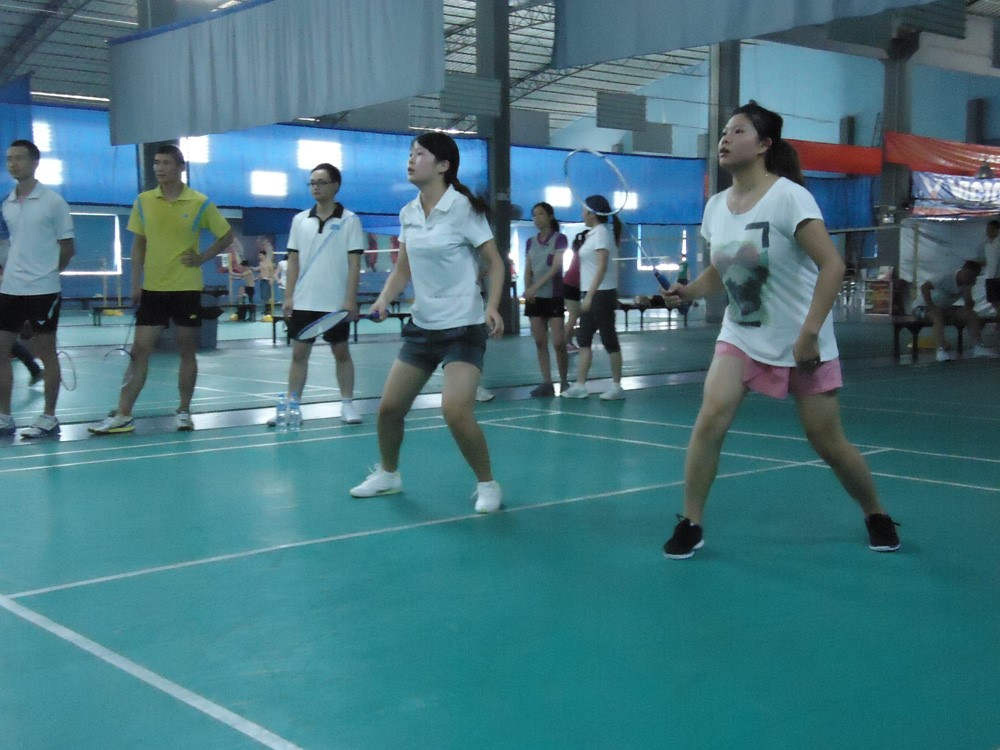

WCFO sports games were successfully held in Wan’an Industrial park in Sep., 2014 in celebration of the complete success of the Universiade and the coming of the National Day. There were four events in total, include Badminton Doubles, Table Tennis Doubles, billiard game and chess game. For each game there are four rounds to determine the top three.
